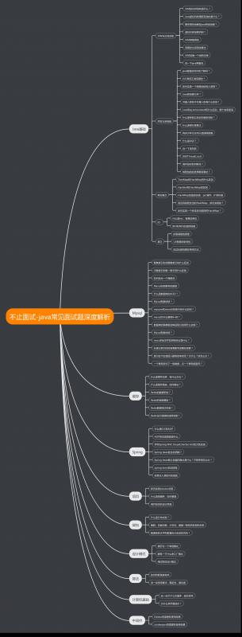

目前已发布的文章：
从事近7年Java开发之后，在2019年这个寒冷的冬天里，我终于迎来了人生中的第一次裁员。
啊，30岁之后的裁员真让人焦虑。
按照以往惯例，在面试心仪的公司之前，需要先面试一些不那么心仪的公司热身，顺便收获一些offer减缓焦虑。
于是在经历两周的全方面立体化饱和式打击，啊不，面试之后。我决心好好梳理一下自己掌握的知识点，归纳总结、查缺补漏。
顺便提一句，虽说现在是资本寒冬，但是现在的面试机会仍然很多，只是大家发offer比往年谨慎了不少。市场既不像之前想象的那么糟，也不像往年那么好。
大浪淘沙，如履薄冰，诸君共勉。
我把这个系列取名为《不止面试-java常见面试题深度解析》，汇总了近期面试来的、前同事打听以及网上搜罗来的各种面试题，涵盖Java基础、数据库、缓存、框架、中间件等各个方面。
不仅给出题目答案，同时深入面试题背后，力图简明扼要的讲清其原理。
大致的知识点如下图，目前只是第一版，随着计划的进行，还会有调整。
ps:目前受图床分辨率限制，大图看不清楚，有需要可直接点击以下链接直接查看源文件：
https://www.processon.com/view/link/5dd34f35e4b0be0584f413e0

目前已发布的文章：
不止面试-jvm类加载面试题详解